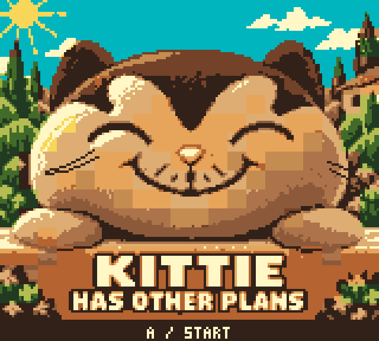

October 3, 2026. The independent art reviewer inspected the original reference-current-front.png and reference-head-on-own-paws-front.png in the owner’s Kittie reference folder, then compared the before/after at native 160×144 and enlarged size.
Source-art review passed. His right cheek, on the viewer’s left, now has two threads curling inward and upward from a low outer anchor. The opposite side is uneven and sweeps outward and down. No consequential identity or readability issue was found. Crown, eyes, nose, grin, chin and paws retain their shapes. Changes are confined to the whisker area and nearby right-edge palette tiles.
The untouched cover-v10.png remains the source; the canonical native generator applies the correction. The first native cartridge capture preserves the corrected whisker directions. The full pixel layout matches the authored preview under the emulator’s palette conversion (maximum channel difference of seven). Capture comparison.
